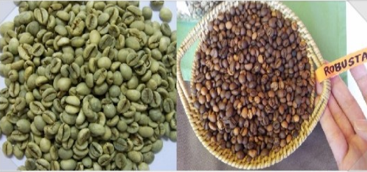
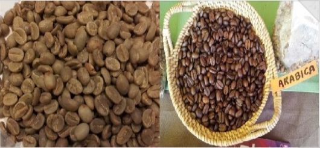
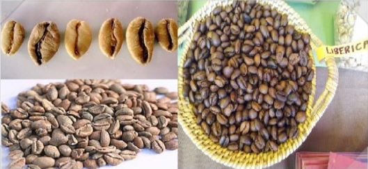
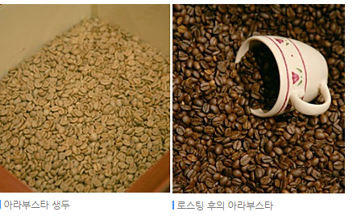

원두의 6대 요소인 신맛, 단맛, 쓴맛, 바디감, 아로마, 플레이버는 원두 생산지의 토질과 온도, 강수량, 습도, 해발고도, 로스팅 정도 등에 따라서도 달라지며 여기서는 가장 큰 구분인 로부스타(카네포라), 아라비카, 리베리카 정도로 크게 나뉘었지만 더 파고 들어가면 부르봉(버번이라고도 한다), 카투아이, 티피카 등 온갖 종으로 분화된다. 보통 세세하게 맛을 따지는 아라비카종에서 이런 파생이 생긴다.
병충해에 강하고 수확량이 많은 Coffea canephora라는 종에서 수확한 커피. 주로 고도가 600m 이하인 낮은 지역에서 나오는 커피들이다. 해발이 낮은 지역은 기온이 높아서 커피가 빨리 자라기 때문에 상대적으로 병충해에 강한 로부스타 품종을 재배한다. 로부스타(Robusta)의 Robust라는 말 자체가 튼튼하다는 뜻. 생산량은 높지만 그만큼 숙성되는 과정이 줄어들기 때문에 맛이 단순하고 향이 약하다는 평가가 지배적이다. 하지만 이것을 맛없다는 뜻으로 받아들이면 안된다. 아라비카에 비해서 맛의 균일성이 떨어질 뿐이지, 싸구려 커피라고 받아들이면 안 된다. 실제로 몇몇 로부스타는 오히려 아라비카보다 비싼 가격에 책정되기도 한다.
Coffea arabica라는 종에서 수확한 커피. 처음으로 재배된 종다. 커피벨트 중에서도 해발 800m 이상의 고산지, 고원에서 주로 생산되며 고급 품종으로 취급된다. 고급 품종 치고는 아라비카 품종의 생산량이 전체 60%를 차지한다. 고급 아라비카가 중저가 로부스타보다 더 많을 정도다. 이는 카페에서 파는 커피들이나 개인 취미생활에 쓰이는 커피가 거의 대부분이 아라비카이기 때문이다. 한국의 로부스타 커피믹스를 보면 전혀 그럴 거 같지 않은데 사실 이런 식의 커피 문화는 주로 바쁜 삶을 살아가는 개발도상국에서나 볼 수 있는 풍경이고 선진국 중에서는 한국, 일본 정도만이 커피믹스를 많이 소모하는데 다른 나라는 전혀 그렇지 않다. 아무튼 맛을 즐기기 위해서 커피를 먹는 것이니 만큼 앞으로도 점점 아라비카 커피의 생산량은 증가될 것으로 보인다.
장점으로 별로 내세울게 없어 상품화에 실패한 로부스타와 아라비카에 밀린 품종. 열매 크기는 셋 중에서 가장 크다. 그리고 길쭉하다. '커피 3대 품종'이니 하는 이론을 이야기 할 때나 등장하지 실제로 만나기는 쉽지 않다. 일반적으로 아라비카나 로부스타보다 더 쓰고 향은 약하다고 알려져있다. 즉, 일반적으로 맛이 없다. 덕분에 생산량이 적다. 전 세계 커피 생산량의 1~2% 이하로 알려져있다. 
2009년 초중반에 발견된 품종. 프랑스의 앙드레 샤리에가 발견했다고 해서 샤리에라고 불린다. 카메룬에서 발견되었는데 놀랍게도 카페인이 없다고 한다. 발견된 지 얼마 되지 않아서인지 아직 상품화 소식은 들려오지 않고 있다. 디카페인 커피와는 다르다. 디카페인 커피는 일반 원두에 카페인을 줄이는(다 없애지는 못하고 대략 98~99% 정도 없앤다) 과정을 거친 것이고, 샤리에는 아예 처음부터 카페인이 없다.
부드러운 맛과 향을 가지는 아라비카와 높은 생산량과 병충해에 강한 로부스타의 장점만을 모아서 교배시킨 아라부스타라는 품종도 있다. 이렇게 재배된 아라부스타는 커피의 품질과 병충해에 대한 저항 개선은 물론 가뭄에 대한 저항성까지 가진다고 한다.
